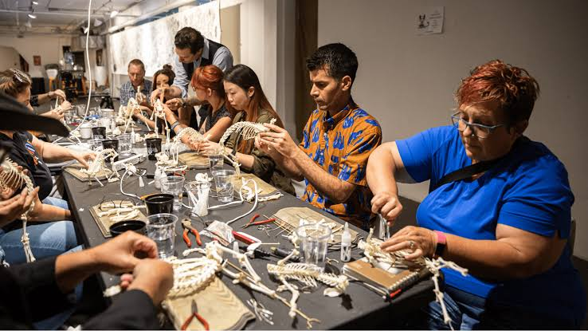

Tôi là Đỗ Tiến Long, hiện đang là sinh viên năm 3 chuyên ngành Hệ thống Thông tin Quản lý tại Trường Quốc tế - Đại học Quốc gia Hà Nội. Với niềm đam mê dành cho công nghệ và dữ liệu, tôi luôn chủ động tìm tòi, tích lũy kiến thức mới để nâng cao tư duy lập trình cũng như rèn luyện các kỹ năng mềm cần thiết, nhằm chuẩn bị nền tảng vững chắc cho sự nghiệp tương lai.
Điều tôi muốn trong kì này là được học hỏi thêm nhiều kiến thức mới và phát triển kỹ năng mềm.
Bên cạnh việc học tập trên lớp, tôi thích dành thời gian rèn luyện tư duy phản xạ qua các trò chơi điện tử và mở rộng góc nhìn cuộc sống thông qua những cuốn sách hay. Đối với tôi, việc giữ tinh thần tò mò, không ngừng học hỏi và sẵn sàng đón nhận những thách thức mới chính là chìa khóa để phát triển bản thân mỗi ngày.
